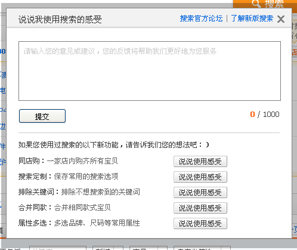
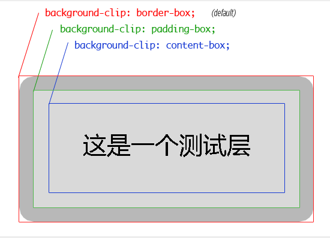

半透明的边框效果，现在在很多网站可以看的到，比如新浪微博、淘宝网。实现方法多种多样，通用性比较好的方法有2个：
上图来自明河的微博首页的截图
新浪微博的半透明边框的对话框，采用了九宫法的方式，半透明的边框其实是图片，9张图片组成可自适应宽度和高度的半透明边框，这种实现方式应该来说是比较理想的，问题就是采用九宫的方式引入了多个无语义的标签，增加了整个html结构的复杂度，而且比较繁琐，还有一个问题就是如果我想要一个半透明红色边框呢？又得重新切图？够崩溃吧。

上图来自淘宝的搜索页面中的“说说我使用搜索的感受”。
也是采用图片的方式去模拟半透明边框，而与新浪微博的解决方案不同的是，使用给对话框内容层的父容器加了个半透明图片背景，然后加个8像素的内边距，模拟出半透明边框的效果。
这种方案的优点是简单，能够自适应宽度高度，缺点是缺少圆角，整体效果差些，而使用图片，通用性差些。
可以看到二种方案都有自身的优点和缺点，这篇教程明河将讲解另外一种使用css3的解决方案。
这里明河使用淘宝的弹出框作为demo，当然做了简化，弹出框内的表单明河只是用截图代替。
可以将这个弹出框与淘宝的弹出框做个比较，就会发现圆滑了很多，至于哪种风格更好，就仁者见仁了。而现在这个弹出框的半透明边框是完全没用到一张图片（可以用firebug查看下），而且结构非常的简单，就一个div搞定问题，接下来我们来看这个层的样式。
#lightbox {
position: absolute; top: 0px;left: 0px;
display:none;
width: 470px; height: 350px;
background-color: white;
text-align: center;
padding:8px;
/* 关键代码部分 */
-moz-background-clip: padding; /* Firefox 3.6 */
-webkit-background-clip: padding; /* Safari 4? Chrome 6? */
background-clip: padding-box; /* Firefox 4, Safari 5, Opera 10, IE 9 */
border: 8px solid rgba(0,0,0,0.3);
-webkit-border-radius: 15px;
-moz-border-radius: 15px;
border-radius: 15px;
}
脚本部分不是这个教程的重点，明河就不贴出来了。css部分的代码看似很多，关键是里面的以下这几行代码：
#lightbox {
/* 关键代码部分 */
-moz-background-clip: padding; /* Firefox 3.6 */
-webkit-background-clip: padding; /* Safari 4? Chrome 6? */
background-clip: padding-box; /* Firefox 4, Safari 5, Opera 10, IE 9 */
border: 8px solid rgba(0,0,0,0.3);
}
为什么利用background-clip可以产生半透明的边框效果呢？接下来明河来说说background-clip。
background-clip这个css3的属性，我相信很多朋友都不是特别熟悉，这里推荐阅读怿飞的一篇文章：《background-clip 与 background-origin 的一则运用》 ,background-clip用于设置背景显示模式，共有border、padding、content三种模式，用于控制背景覆盖容器的范围，而默认的显示模式是border（并不是所有的默认显示模式都是border，IE下有特例，可以看阅怿飞的那篇文章），即背景覆盖无法超出边框（有覆盖到边框）；而当demo中将其值设置为padding时，也就是说背景只能覆盖内盒，边框是不存在背景的！有点抽象，还是来看个图：
上图演示了background-clip三个模式下的背景边界。
由于demo中将background-clip设置为padding，背景颜色（白色）不在存在于边框，当你的边框是带有透明度设置时（demo中是0.3），就会产生这种半透明的边框效果！留意不同浏览器的设置方法是有些差异的，而IE是不支持的！这是这种方案的唯一弊端。
background-clip密切相关的还有个 background-origin的用法，这个留待日后再讲解。